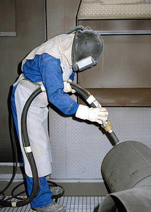

Einsatz von Strahlerhelmen mit Frischluftversorgung und Prallschutzüberzug
nach DIN EN 271
Eine ausreichende Schutzwirkung wird dann erreicht,
wenn der Helm innen liegend eine fest mit dem Helm
verbundene Sicherheitsscheibe besitzt und über dieser zusätzlich
eine Verschleißscheibe angeordnet ist,
die auch im Inneren des Strahlraums gewährleistet,
dass beim Bersten bzw. Wechsel der Verschleißscheibe,
der Atemschutz erhalten bleibt.